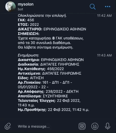

To
MySolonBot
σας βοηθάει στην παρακολούθηση των υποθέσεών σας στο solon.gov.gr
Οδηγίες
Εγκαθιστάτε την εφαρμογή μηνυμάτων Telegram στο κινητό σας ή στον
υπολογιστή σας telegram.org και
έπειτα πατάτε τον ακόλουθο σύνδεσμο
MySolonBot. Στη συνέχεια πληκτρολογείτε ΓΑΚ και έτος με μορφή /gak αριθμός
έτος πχ /gak 123 2019 (αν γράψετε κάτι μετά το έτος περνάει σαν
σημείωση - μέχρι 50 χαρακτήρες) και από το μενού που θα σας
εμφανίσει επιλέγετε δικαστήριο και έδρα. Όταν υπάρξει μεταβολή στην
κατάσταση της υπόθεσης θα σας έρθει ειδοποίηση.

Προσθήκη σημείωσης
Γράφοντας /gak note και την σημειώση που επιθυμείτε
πχ. /gak note ΠΑΡΑΔΕΙΓΜΑ, θα σας βγάλει τις υποθέσεις που έχετε
καταχωρίσει, για να επιλέξετε σε ποια θέλετε να προστεθεί η
συγκεκριμένη σημείωση.
Επιλογή /menu
Γράφοντας /menu θα σας εμφανιστούν παρακάτω
επιλογές:
Διαγραφή καταχωρημένων υποθέσεων
Γράφοντας /gak delete θα σας βγάλει τις υποθέσεις
που έχετε καταχωρίσει, για να επιλέξετε ποια θέλετε να διαγράψετε.
Εμφάνιση κατάστασης υπόθεσης
Γράφοντας /gak status θα σας βγάλει τις υποθέσεις
που έχετε καταχωρίσει, για να επιλέξετε ποιας θέλετε να δείτε την
κατάσταση.
Επιλογή για υπενθύμιση
Με την επιλογή /reminder θα σας έρχεται υπενθύμιση
10 ημέρες πριν την ημερομηνία δικασίμου/προθεσμία νεάς τακτικής
(υπολογίζονται αυτόματα από την εφαρμογή)
Παρακολούθηση για άσκηση ένδικου μέσου
Γράφοντας /gak efesi θα σας βγάλει τις υποθέσεις
που έχετε καταχωρίσει, για να επιλέξετε αυτήν για την οποία θέλετε
να γίνεται έλεγχος για τυχόν άσκηση ενδίκου μέσου. Αν ασκηθεί κάποιο
ένδικο μέσο θα σας έρθει ειδοποιήση (ειδοποίηση έρχεται μόνο για το
πρώτο ένδικο μέσο, σε περίπτωση πχ που ασκηθούν περισσότερες
εφέσεις).
Εισαγωγή πολλαπλών υποθέσεων με αρχείο excel
Γράφοντας /excel το πρόγραμμα θα σας στείλει είναι
πρότυπο αρχείο excel της μορφής GAK.xlsx στο οποίο περνάτε τα ΓΑΚ
σας, και μετά το ξαναστέλνετε στο bot, και αποθηκεύει αυτόματα τα
στοιχεία. Οι ίδιοι περιορισμοί ισχύουν (max 30 ΓΑΚ - και παραπάνω να
βάλετε απλά δεν θα τα περάσει). Επίσης αν κάποιο ΓΑΚ είναι ήδη
περασμένο δεν θα το ξαναπεράσει.
Εμφάνιση προθεσμιών
Γράφοντας /προθεσμίες θα σας βγάλει τις υποθέσεις
που έχετε καταχωρίσει, για να επιλέξετε αυτήν για την οποία θέλετε
να δείτε τις σχετικές προθεσμίες της.
Επόμενη εβδομάδα - επόμενος μήνες
Γράφοντας /επόμενη_εβδομάδα /επόμενος_μήνας θα σας
εμφανίσει τις προθεσμίες-δικασίμους του αντίστοιχου χρονικού
διαστήματος.
Ημερολόγιο
Γράφοντας /ημερολόγιο θα εμφανιστούν οι επόμενες
δικάσιμοί σας.
Συγχρονισμός ημερολογίου
Γράφοντας /συγχρονισμός_ημερολογίου το πρόγραμμα
θα σας στείλει ένα αρχείο ics με όλα τα events σας για να τα κάνετε
εισαγωγή στο ημερολόγιό του κινητού ή του υπολογιστή σας.
MySolonBot
Statistics
🤷🏻 Χρήστες: 542
📁 Υποθέσεις:
4526
🏛Hall Of Shame🏛
Παλαιότερη δικάσιμος χωρίς εκδοθείσα απόφαση:
🥇 22/5/2014
- ΠΡΩΤΟΔΙΚΕΙΟ ΑΘΗΝΩΝ
🥈 2/3/2016
- ΠΡΩΤΟΔΙΚΕΙΟ ΑΘΗΝΩΝ
🥉 31/5/2016
- ΕΙΡΗΝΟΔΙΚΕΙΟ ΑΘΗΝΩΝ
Παλαιότερη κατάθεση χωρίς εκδοθείσα απόφαση:
🥇 23/10/2009
- ΠΡΩΤΟΔΙΚΕΙΟ ΑΘΗΝΩΝ
🥈 10/7/2012
- ΕΙΡΗΝΟΔΙΚΕΙΟ ΠΕΙΡΑΙΑ
🥉 13/12/2012
- ΠΡΩΤΟΔΙΚΕΙΟ ΑΘΗΝΩΝ
Μεγαλύτερη απόσταση μεταξύ κατάθεσης και δικασίμου
🥇 12/3/2013
- 16/9/2022
ΕΙΡΗΝΟΔΙΚΕΙΟ ΧΑΛΑΝΔΡΙΟΥ
🥈 14/4/2014
- 12/10/2021
ΠΡΩΤΟΔΙΚΕΙΟ ΑΘΗΝΩΝ
🥉 17/1/2019
- 13/1/2026
ΠΡΩΤΟΔΙΚΕΙΟ ΑΘΗΝΩΝ
🕰 Τελευταίος έλεγχος:
29/9/2022, 2:00:01 π.μ.